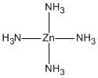

A frequent question is, why does the Lewis structure start off with some metal atoms having negative charges? For example, if in an organometallic complex, a magnesium or zinc atom has four bonds to neighboring ligands, then the Lewis structure will assign the charge on the metal atom of -2. Everyone knows that the metal should have a positive charge, so what's going on?
The answer is simple. Imagine a complex [M(NH3)4]2+, where M is a metal atom that normally exists as the 2+ ion, e.g., Mg or Zn, and, for the purpose of building the Lewis structure, the metal atom forms four bonds, one to each of the four NH3 groups. 
Each two-electron N-Zn bond is constructed from the lone pair on a nitrogen atom, donating to an empty orbital on the zinc atom. This puts one electron on the zinc atom, and removes one electron from the nitrogen atom. So each -NH3 becomes -NH3+, and the zinc becomes Zn2-. Normally, this Lewis structure is best for starting a MOZYME calculation. As soon as MOZYME starts, the more correct polarized bond structure forms and the metal atom becomes electropositive. If you don't like the idea of a Zn2-, then use METAL to convert the zinc into a purely ionic entity, i.e., Zn2+. This should not affect the results in any significant way.